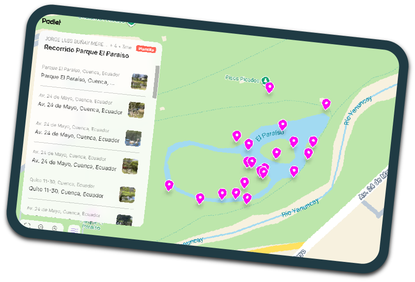
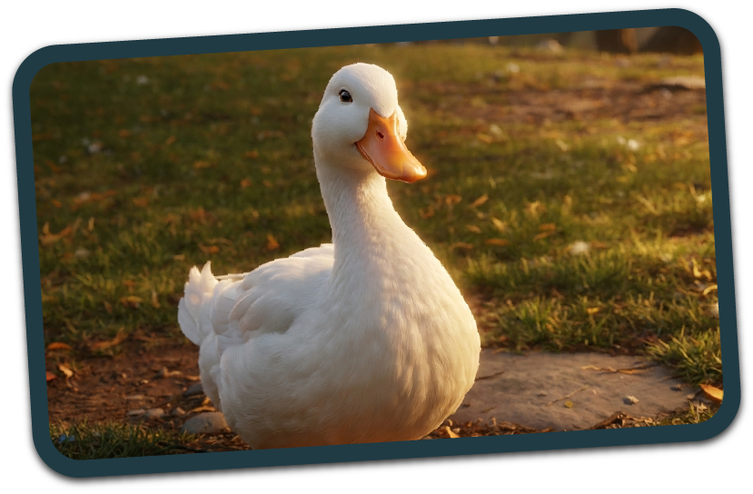
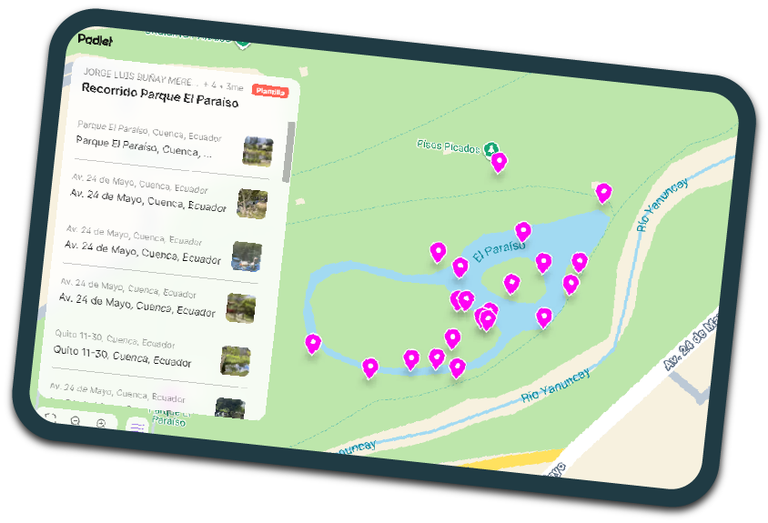
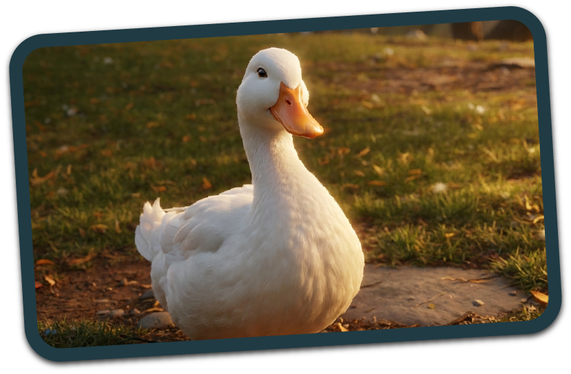

ECOS DEL PARAÍSO
Una voz para el agua

Carrera de Diseño Gráfico

El Parque El Paraíso es uno de los más extensos de Cuenca. Situado en el sector de Gapal, se caracteriza por la confluencia de dos de los cuatro ríos de la ciudad: el Tomebamba y el Yanuncay, bajo la administración y cuidado de la EMAC EP.
En este contexto, el proyecto aborda una pequeña pero significativa área del parque: la laguna de los patos. Esta zona permite observar a las aves en libertad, pero sufre debido al comportamiento de los visitantes. Pese a la señalética, es común ver personas arrojando basura, alimentando incorrectamente a los patos o persiguiéndolos; acciones que deterioran el lugar y afectan directamente la salud de la fauna, sobretodo siendo los niños los mayores culpables.
Con esto en mente nuestro objetivo será implementar estrategias de diseño social que promuevan la conservación, protección y visibilización de las aves del Parque Paraíso, aplicando herramientas sostenibles, educativas, comunicativas y participativas que sensibilicen y movilicen a la comunidad universitaria de la Universidad de Cuenca aprovechando su cercanía con los ríos hacia una relación más responsable con su entorno natural, fomentando la conciencia ambiental, el diálogo y la generación de propuestas para la protección de las aves.


 





Soluciones para crear recursos de comunicación: Crear un cuento ilustrado sobre la historia de Pato Paco

Soluciones para organizar una intervención en el espacio público: Hacer un taller de lectura sobre el cuento y una posterior ronda de preguntas al público
Soluciones para generar un proyecto de transformación del barrio o un sector en particular: Decorar las rocas de la isla central donde viven los patos con mensajes de concientización ambiental
+Soluciones para sistematizar (registrar) saberes o experiencias:Durante el dia de activación se creará un diario del lago, donde podrán escribir sus experiencias
+Soluciones para organizar talleres: Hacer un taller para crear personajes del cuento con materiales reciclados
+Soluciones colaborativas online: Crear un minijuego de dispositivos móviles que se podrá acceder con un qr que estará en el parque.
+